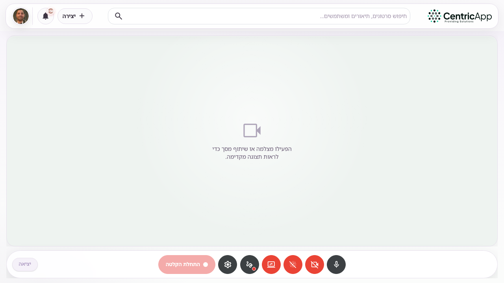
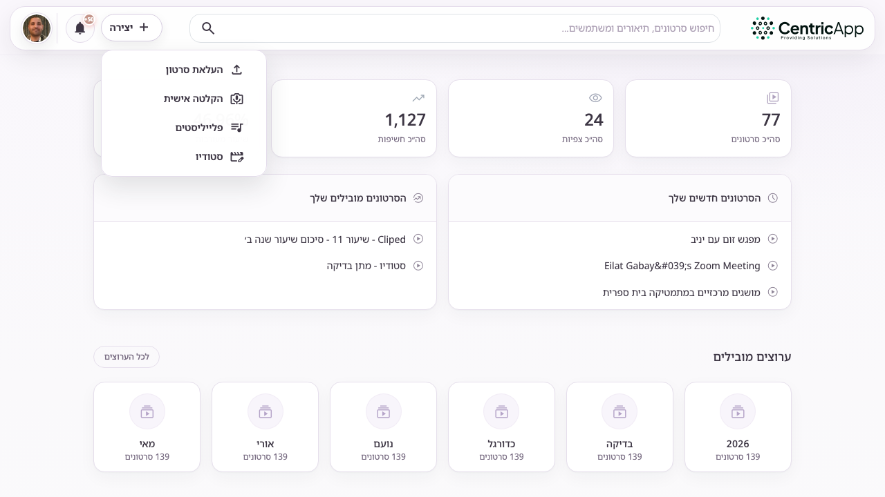
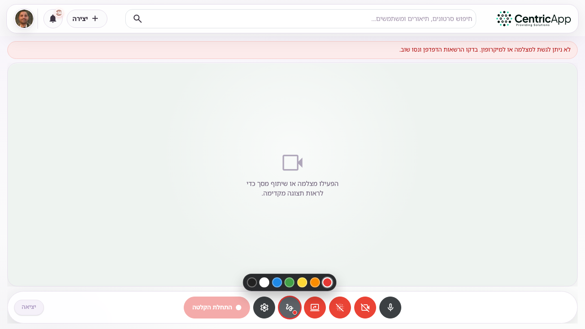

מבט כללי
עמוד הקלטה אישית מאפשר להקליט מצלמה, שיתוף מסך או שניהם יחד. בסיום ההקלטה הסרטון נשמר אוטומטית ומופיע בהסרטונים שלי. הכתובת: /videos/record (למשל https://dev.video/videos/record).
האפשרות זמינה רק אם הופעלה הקלטה בהגדרות המערכת, ולמשתמשים שאינם צופים בלבד.

כניסה לעמוד
בהאדר לחצו על + יצירה, ואז בחרו הקלטה אישית. אפשר גם לפתוח ישירות את /videos/record.

סרגל הבקרה
בתחתית העמוד מופיע סרגל Meet עם הפקדים הבאים:
- מיקרופון – הפעלה/השתקה, עם חיווי עוצמת קול.
- מצלמה – הפעלה או כיבוי של המצלמה.
- טשטוש רקע – טשטוש הרקע מאחורי המצלמה (כשהמצלמה פעילה).
- שיתוף מסך – בחירת חלון או מסך להקלטה.
- סימון על המסך – ציור/סימון מעל התצוגה (ראו בהמשך).
- הגדרות – בחירת מצלמה ומיקרופון, ומיקום מצלמת ה־PiP כששני המקורות פעילים.
- התחלת הקלטה / סיום הקלטה – התחלה, השהיה והמשך, וסיום עם שמירה.
- יציאה – חזרה לסרטונים שלי בלי לשמור הקלטה חדשה.
מצלמה ושיתוף מסך יחד
אפשר להפעיל מצלמה ושיתוף מסך במקביל. בדרך כלל המסך מוצג בגדול והמצלמה בפינה עגולה (PiP). בהגדרות אפשר לבחור את פינת המצלמה (עליונה/תחתונה, ימין/שמאל). בסיום, המערכת מאחדת את שני הזרמים לסרטון אחד.
סימון על המסך (עיפרון)
לחצו על כפתור סימון על המסך (אייקון ציור). כשהכפתור פעיל מופיעה מסגרת בצבע הנבחר ונפתחת שורת בחירת צבעים.
- ציירו על התצוגה המקדימה עם העכבר או המגע.
- בחרו צבע מהרצועה (אדום, כתום, צהוב, ירוק, כחול, לבן, שחור).
- לחצו על מחיקת סימונים (מחק) כדי לנקות את כל הסימונים.
הסימונים נשמרים גם בסרטון הסופי – הם מורכבים על פריימי ההקלטה בזמן הצילום.

הקלטה ושמירה
- הפעילו מצלמה ו/או שיתוף מסך עד שמופיעה תצוגה מקדימה.
- לחצו התחלת הקלטה. במהלך ההקלטה אפשר להשהות ולהמשיך.
- לחצו סיום הקלטה. יופיע מסך המתנה בזמן שמירת הסרטון.
- לאחר השמירה תועברו להסרטונים שלי. משם אפשר לערוך כותרת, פרטיות והגדרות נוספות.
ראו גם: הסרטונים שלי, הגדרות הסרטון, העלאת סרטון.